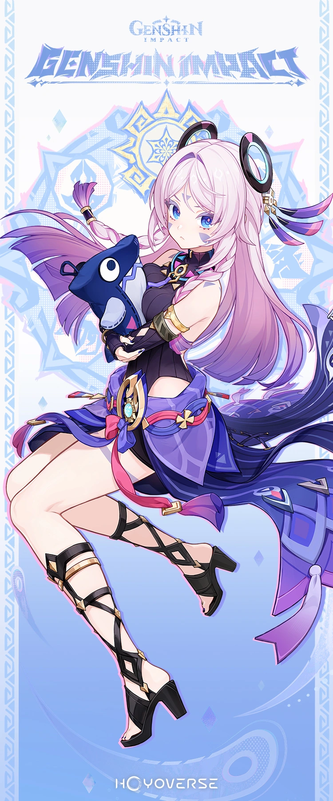
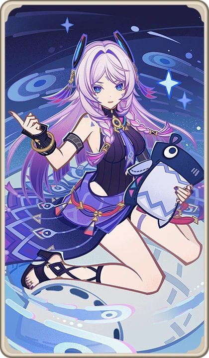
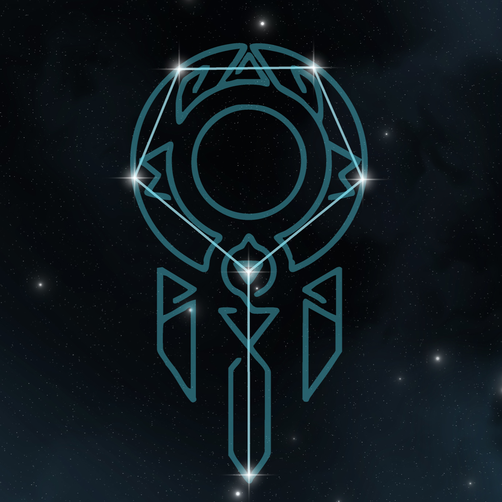
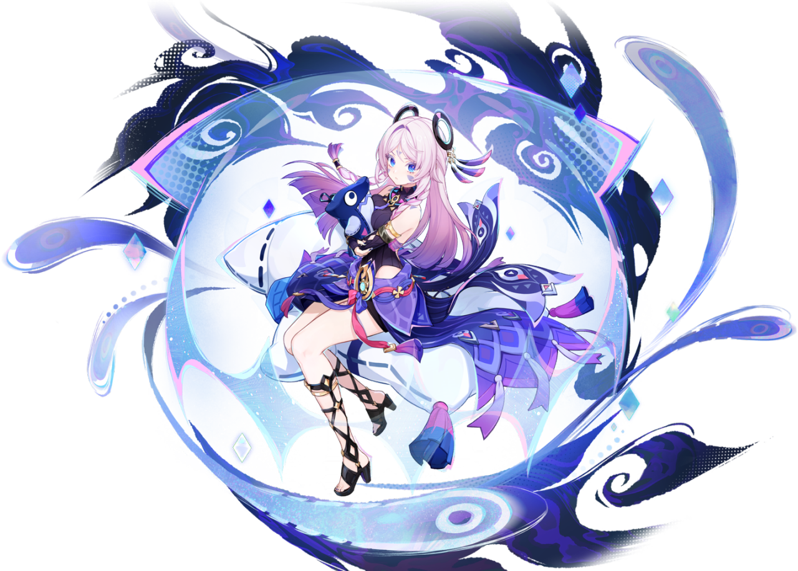
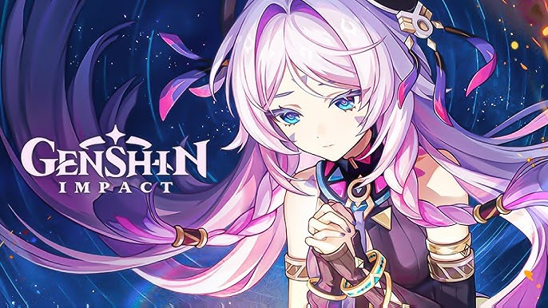

Citlali





Basic Information
Full Name: Citlali
Vision: Cryo
Nation: Natlan
Voice Actors: TBD
Citlali is a wise elder from Natlan, also called Granny Itztli, respected by her people.
Abilities
NA: Catalyst Cryo attacks.
Skill: Creates protective shields and supports allies.
Ultimate: Reduces enemies’ resistances while shielding allies.
Talents: Strong synergy with reaction-based teams.
Constellation
- C1: Strengthens shield duration.
- C2: Increases Cryo reaction damage.
- C4: Adds team-wide buffs.
- C6: Grants powerful support utility.
Summary
Citlali is a supportive Cryo unit with strong shields and reaction boosts.